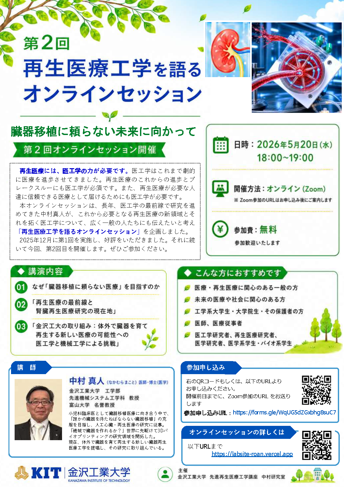

次回以降の予定
次回の開催内容が決まり次第、このページでお知らせします。
Online Session Series
臓器移植に頼らない未来に向かって
再生医療の原点と未来を、医療を革新し人々に届ける医工学の視点から語り合うオンラインセッション

About 活動について
本オンラインセッションは、再生医療・再生医工学・人工臓器・バイオファブリケーションなどの話題を、 研究者だけでなく、一般の方、学生、医療やものづくりに関心のある方にも開いていく活動です。
先進再生医療工学講座では、オンラインセッションを通じて、未来の医療を支える工学の役割、 研究の現在地、社会に届けるための課題を継続的に発信していきます。
Sessions
次回の開催内容が決まり次第、このページでお知らせします。

Speaker 講師
医師・博士（医学）
金沢大学小児科学教室で小児科学を学ぶ。小児科臨床医として診療に向き合う中で、 臓器移植が必要な患者さんに出会い、臓器移植医療を学ぶとともに、 「誰かの臓器を願い待つ必要がない未来医療」が必要と考え、人工臓器、再生医療の研究に取り組んできた。 再生医療の研究では、生きた臓器をつくるために機械で臓器をつくる挑戦 「3Dバイオプリンティング」という医学と工学が融合する新しい研究領域を開拓した。 さらに、現在は、体外で臓器を育て再生する「臓器灌流×臓器再生」の研究に取り組んでいる。
Contact
金沢工業大学 先進再生医療工学講座 中村研究室
問い合わせ